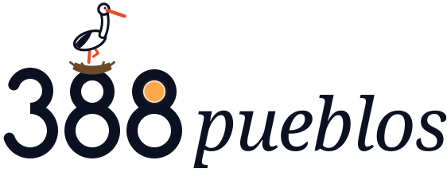

Esto es Guareña, edificio a edificio.
Cada volumen que ves sale del Catastro, con su huella y su número real de plantas. Sobre la torre de Santa María, como en tantos campanarios extremeños, anidan las cigüeñas.

ÚneteUn gemelo digital de cada municipio de Extremadura convertido en un mundo online para conocer, jugar y encontrarse. Empezamos por Guareña.
Cada volumen que ves sale del Catastro, con su huella y su número real de plantas. Sobre la torre de Santa María, como en tantos campanarios extremeños, anidan las cigüeñas.
Calles estrechas para guardar la sombra, patios, corrales y, alrededor, el mosaico de las Vegas Altas del Guadiana: olivar en marco, viña, cereal y regadío.
Al lado están Don Benito, Villanueva de la Serena, Valdetorres, Cristina o Manchita. Cada uno tiene su torre, su fiesta, sus apodos y su manera de hablar.
Cuando un pueblo se vacía no solo se van sus vecinos. Se van sus fiestas, sus apodos, sus juegos de calle y su forma de nombrar las cosas. Nosotros construimos una copia viva de cada uno, para que se pueda visitar, jugar y habitar desde cualquier lugar del mundo.
Iglesias, plazas, ermitas y calles reconstruidas con datos públicos y fotografía. La memoria del pueblo contada por su gente.
Misiones, fiestas en directo, retos entre pueblos vecinos y un pasaporte que se sella pueblo a pueblo.
Un lugar abierto para jóvenes de aquí y para quienes se fueron: amigos, primos, nietos y curiosos de cualquier parte.
388 Pueblos es la idea de Ana Pérez Toledo, emprendedora de Guareña. Su generación pasa horas en mundos digitales que no tienen nada que ver con su sitio. Ella se preguntó por qué uno de esos mundos no podía ser su propio pueblo.
De ahí nace el proyecto: recrear con rigor la realidad y la idiosincrasia de los pueblos extremeños en un universo digital abierto. Que no queden en el olvido, que sirvan para pensar mejor su urbanismo y que cualquiera, viva donde viva, pueda entrar, jugar y quedarse.
“No quiero que mi pueblo sea solo un recuerdo. Quiero que sea un sitio al que se pueda volver desde cualquier parte.”
Ana Pérez Toledo · fundadora
Cada municipio se construye en capas: primero el dato, encima el juego, alrededor la gente y, al final, las decisiones.
El pueblo tal y como es. Volumetría del Catastro, relieve LiDAR del IGN y fotogrametría de fachadas, iglesias y rincones. Medible y actualizable.
Un sitio donde pasan cosas. Se entra desde el navegador o el móvil, sin instalar nada. Misiones, minijuegos, eventos y un calendario de fiestas en directo.
Jóvenes del pueblo, extremeños que viven fuera y jugadores de cualquier país. Avatares, grupos por pueblo, chat moderado y espacios seguros para menores.
Probar antes de construir. Simular una peatonalización, la sombra de un arbolado, un mercado o la rehabilitación de una casa, y preguntar a los vecinos antes de decidir.
Cada pueblo que visitas te sella el pasaporte. Cuando vayas de verdad, también en su plaza. Coleccionar Extremadura entera es el reto largo.
Cuando el pueblo está en fiestas, el mundo también. Verbena, procesión o romería vividas online por quien no puede ir.
Misiones escritas con los mayores de cada pueblo: oficios, apodos, leyendas y lugares que ya no salen en ningún mapa.
El pique sano de siempre entre pueblos vecinos, con retos semanales y clasificación por comarcas.
Entra en cualquiera de los 388 con tu avatar y encuéntrate con quien esté allí en ese momento. Sin chat libre: frases y emojis, pensado para menores.
Vota qué pueblo se modela después. Los votos se llevan a cada ayuntamiento como prueba de que hay gente esperando.
Los 388 ya tienen su gemelo automático con los edificios del Catastro. Toca cualquiera y entra a pasear.
388 pueblos destacados
Toca cualquiera para verlo en el mapa. Están todos, de Abadía a Zorita.
Primero demostrar que funciona en Guareña y reunir una comunidad real. Con jugadores dentro, ir pueblo a pueblo con los ayuntamientos que quieran sumarse.
Calendario orientativo. Cada fase depende de la comunidad conseguida y de la financiación.
Tu pueblo ya está levantado en volumen con datos del Catastro, y la gente puede entrar a pasear. Despertarlo sirve para mucho más que jugar: documenta el patrimonio, ayuda a decidir el urbanismo, atrae visitas y devuelve al pueblo a quienes viven lejos.
Iglesias, ermitas, casas y calles registradas en 3D antes de que cambien o desaparezcan.
Probar una obra, una peatonalización o un arbolado sobre el pueblo real y enseñarlo a los vecinos.
Un motivo para que los jóvenes se queden conectados y para que los que se fueron vuelvan, aunque sea en verano.
Una puerta de entrada a fiestas, rutas y producto local para gente que nunca habría encontrado el pueblo.
Importes sin IVA, más una licencia anual. Como referencia, la Diputación de Badajoz licitó en 2024 gemelos digitales turísticos para 20 municipios por 954.690 €, unos 47.700 € por pueblo. Automatizar la base con datos abiertos es lo que permite llegar a los pueblos pequeños.